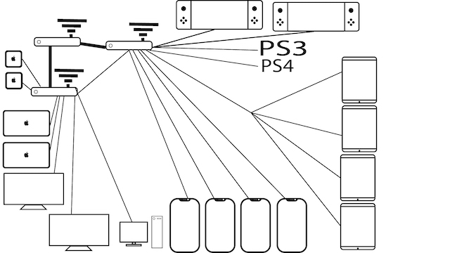

Hjemmenettverk
DHCP-Scope:
Adressen er 10.0.0.38,
nettverksmasken er 255.255.255.0,
leietiden er 60 minutter og
den deler ut adresser fra 10.0.0.1-10.0.0.137. Sikkerheten til nettverket er WPA2.
Frekvensområdet til nettet er mellom 2.4 og 5 GHz.
Hastigheten til nettverket er 350 Mbps eller 43 MB i sekundet.
Vi har ingen muligheter for fildeling på hoved-ruteren.
Det er god dekning ca. 10 meter fra huset på hver side, på grunn av flere rutere.
Vi har en IKEA Gateway som vi kan bruke til å styre utvalgte lys og stikkontakter via automatisering, eller via bevegelses-meldere.
Vi kan også styre garasjeporten via et fjernstyrt rele.
Vi har også to webkamera som ser på to spesifikke steder på tomten,
det er også dør og vindus sensorer for å sjekke om vinduer eller garasjeporten står åpen.
Hovedruteren gir ikke like god dekning i huset, men som sagt tidligere har vi flere rutere.
Det er liten sjanse for hacking fordi alle passord som var standard er endret og vi har den sikreste WPA løsningen.
Jeg har i nyere tid fått et en ordentlig wifi løsning på min stasjonære pc slik at jeg fikk hele internettbåndbredden,
dette er fordi før brukte jeg en USB dongle men nå har jeg et pcie kort som går direkte i motherboardet til pc-en.
Det står to ekstra rutere i huset for lik dekning overalt og disse har mulighet for fildeling, men det er ikke suttet opp.
Det er to trådløse nett hvor et er SSID som er skjult og det som er skjult som vi som bruker det er koblet opp til.
Internett leverandøren er Telenor, abonnementet er Bredbånd 350 som er et fiberabonnement.
4 mobiler, 2 Nintendo switch, 3 Ipader, 1 stasjoner pc, 2 macbooker,1 ps4, 1 ps3 og 2 Tv-er.
Neste oppgave
